それは土曜の夕方頃，相変わらずゲーセンでダラダラとアイマスしていた私の元に一通のメールが．
送信者：サモ 「○○○（ゲーセン名）行きの車が来る家はうちですか？」
ごめ，君はてっきり単体で来るものかと(ノ∀｀) だから俺は早々に家を出たというのにｗ
で，いつもサモにはゲーセンに乗せていってもらってるので，ここらで恩返ししとかないとなぁと思い，わざわざサモを迎えに行くことに．
全てが狂ったのはそのサモ宅へ向かう車の中です．
「あー，せっかくまだまだ暇度数の高い連休なんだから，もっとバグった遊びしたいなぁ… 高松は先週行ったし，なんかないかなぁ…」
そして思いつく．
「瀬戸大橋渡って岡山へ行ってみるというのはどうだろうか？寝床は車内にして．あ，これいいかもしれない(゜∀゜)」
もうね，どうかしてるとしか思えない．
サモ宅到着．早速サモに尋ねる．
か「明日バイト無い？んで今夜新聞休める？」
サモ「ああ，いけるよ」
か「よし，ほな旅の支度をして」
サモ「！！？」
毛布やら何やらを車に持ち込んで，いざ出発！ほんとはohrinも誘いたかったけど，何故かまったく電話にでなかったので仕方なくサモと二人で行くことに．
でも考えてみれば，車で寝られるのは2人が限度のようだったのでこれでよかったのかもしれません．交通費の割り勘する要員が少なかったというのは痛手でしたが… orz
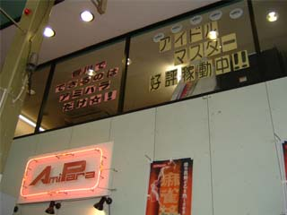
せっかく高松を通過するので，サービスをやっているというアミパラへ行くことに．それとサモが千早からのブーストをここで消化しないと期間が過ぎてしまうというのもありました．


ナニこのサービス？俺その気になったら20クレ以上遊べるじゃないかｗ
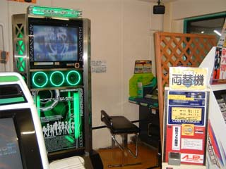 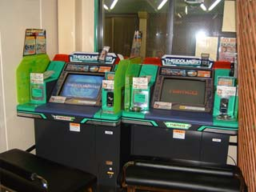 
ここは筐体にヘッドフォンが付いています．店側のサービスです．
そして適当にプレイして駐車場へ戻ることに．すると途中でこんなん見つけました．
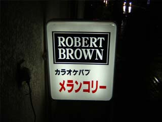
花映塚ネタｗ まぁ分かる人にだけ向けたネタですｗ
そうして高松を出発し，瀬戸大橋に通じるIC（坂出北）を目指し一路西へ．
ちなみにこの日は雨が降っていました．それも割と激しく．
そして高速を運転するのは実はこれが始めてだったりしたわけで（教習所の高速教習はないのと同じ），人生初の高速が夜間，激しい雨風の中だったというちょっとチャレンジャーなことをしてきたりもしました orz まぁ全然車の通りが少なかったので余裕でしたが（そらそうだ）．
で，瀬戸大橋を渡りきると児島というICですぐに高速を下りました．いや，高速に無駄にお金かけたくなかったので．
でも，橋を渡るだけの最短区間だったのに料金が3,500円もしました．瀬戸大橋高いよ高過ぎるよ orz
さて，この車の運転中，助手席のサモがやたらと寒い寒いと言っていました．確かに雨は降ってるけど，それほど寒くはなかったのに，です．
どうも風邪だったみたいです．そして詳しく話すと長くなるので割愛しますが，この男，この日の前日の早朝，バイト先の連中とバイクで高松まで行ってたらしいのです．で，筋肉痛が物凄かったようです．つまり，筋肉痛と寒気の二重苦の中，彼は岡山遠征を成し遂げたのです．
いや，ほんとごめん orz
この後サモは車内で毛布一枚で寝るという，とても風邪ひいてる人間のすることとは思えない荒業も成し遂げました．
そしてそのまま私の岡山散策に付き合ったりと，ほんとご苦労さまでした．

ちなみに岡山市内のとあるサンクスの駐車場で，一夜を明かしました．大丈夫，隅っこの方に車とめてたから（そういう問題じゃねえ
そんな感じで，1日目は岡山市内へ到着して終わりました．
翌日，昨夜までの雨は嘘のように晴れ，絶好の散策日和となりました．
で，岡山市内にある「アミパラウェルカム店」を探してまずは交番で道を聞くことに．
すると交番の前になんかあるーｗ


アリスらしいですが，正直「怖ッ！」です(^^;

ちなみにここのおまわりさんにアミパラまでの道を丁寧に教えてもらいました．
今まで交番で道を尋ねたことなんてなかったので，ここまで的確に教えてもらえるものなのかとかなり感心しましたｗ


途中で見つけたマクドナルドで朝食を済ませる．
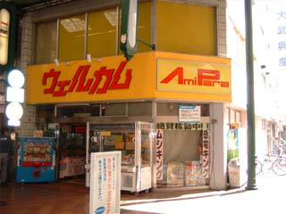
でまたしばらく教えられたとおりに商店街を歩くとキター！
ちなみに到着したときはまだ開店してなかったので外で待つことに(^^;

 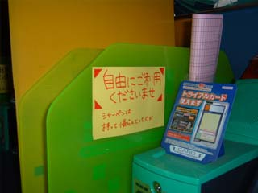
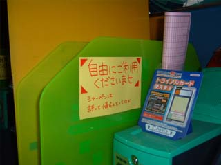
筐体の周りはこんな感じでした．コミュニケーションノートにもしっかりと足跡を付けてきましたよヽ(´−｀)ノ
ちなみにこの店は太鼓の達人が100円3曲，2人プレイするとボーナスで4曲プレイ可能という超サービス台になっていました．
なのでサモ（筋肉痛）とプレイしてきました．徳島にもこんなところあればいいのに．
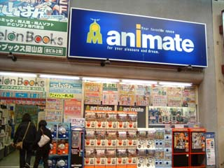 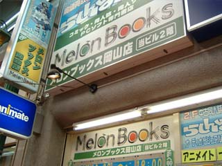
同じ商店街にダメ気な店を発見ヽ(´−｀)ノ 一応進入してみました．
サモがやたら怖気づいてましたが，こういう店は初めてらしかったので，まあ無理もないかとｗ
で，次は岡山駅を目指すことに．目的は入場券を買うこと．それとハプニング☆ロケ千早を再現すること．
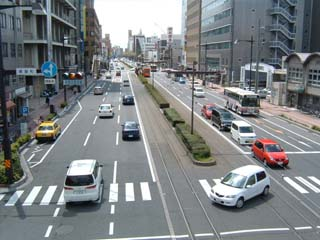 
歩道橋から記念にニ枚．岡山市内は一方通行がやたらと多いので，車で行く方はマジで注意が必要です．
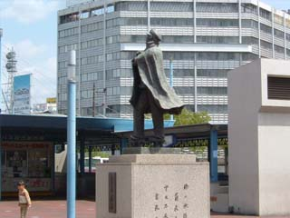 
岡山駅キター！
さっそく入場券（140円）を購入し，いよいよ千早を再現することに．こういうの初めてだからほんとワクテカでした．

結果
…割と似てると思う．千早パネルとか作っておけば完璧だったけど，突発旅行だったので流石にそれは無理ですた orz
で，十分満足して次は倉敷を目指すことに．岡山の設置店舗合計3店のうち，2店は倉敷市内にあるのです．
2時間くらいだったか，国道2号線（確か）をずーっと行って倉敷市内に到着．
まずは倉敷駅の入場券だ，ということで駅周辺を車でブラブラと．
このとき，車をとめる場所がどこにもなくて，サモを車に残し「停車」だと言い張る作戦で路上駐車して急いで駅へ行ってきました orz
で車内にデジカメ忘れた o...rz よって倉敷駅の写真はありませんｗ
それが終わればすぐさまゲーセンを探して再び車を走らせました．
 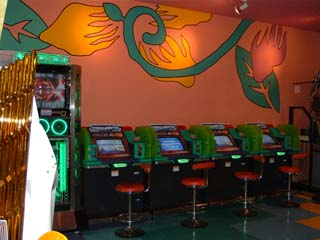 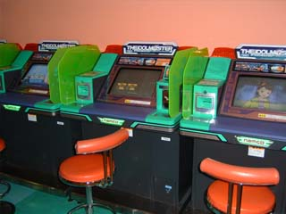
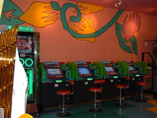 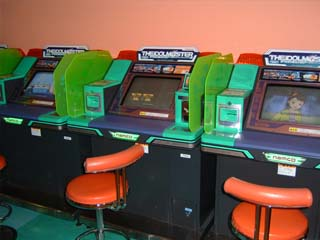
まずは一店舗目，倉敷市のイオン専門店街にあるスウィートピーランドというゲーセン．サモと1クレずつプレイ．
コミュニケーションノートは無し orz まぁ，家族連れ向けの大型ショッピングセンターのゲーセンですから，アイマスがあっただけでも凄いと思わなきゃｗ
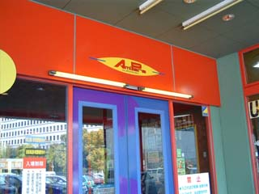 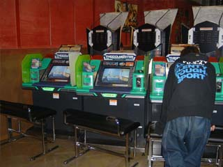 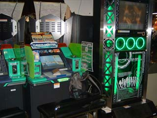
二店舗目．同じく倉敷市のアミパラ．やはり1クレずつプレイ．
ここもコミュニケーションノート無し orz
ですがやたら面白い注意書きがありました．
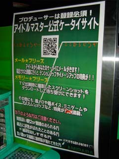 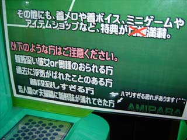
「普段寂しすぎる方，恋人間or夫婦間に新鮮味が薄れてきた方 ←ハマリすぎる恐れがあります(^^;」
だとさｗ
そしてこれで岡山の事務所は制覇しました．やったね，おめでとう，俺たち！
本当はチボリ公園とか倉敷の町並みとかを見たりしたかったんですが，疲れた + 駐車場代を払うのはもうイヤだ orz + そろそろ時間がない，ということで，帰ることにしました．
また瀬戸大橋を渡る我々．今度は昼間 + 快晴だったので景色はバツグンでした．
せっかくなのでPAに寄って橋の写真とかを撮ることに．
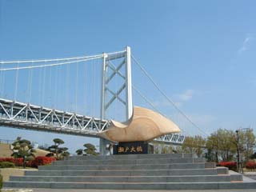
よく分からない「瀬戸大橋」と書かれた石を，橋をバックに撮影．ほんとこの石は何なんだろう？


鉄オタのための列車通過時刻表と，私が撮影した「しおかぜ」．
そして，そのあと香川から国道11号線をずーっと南下してきて，徳島へ帰り着きました．
ちなみに，ガソリンとか走行距離の変化は以下の写真の通りです．
 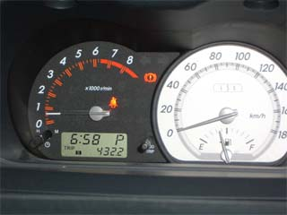
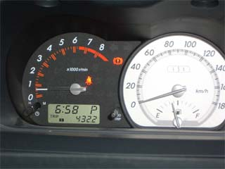
左：出発時 右：帰宅時
帰ってからは，それはもう速攻で風呂に入って，21時には眠りについていました．やっぱり体は激しく疲れていたんですね orz
そんな感じの，突発岡山遠征でした．交通費が恐ろしくかかったことには，もう触れたくないです orz
おまけ
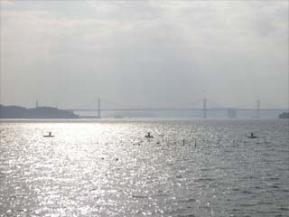
高松の北にある半島の海沿いの道からサモが撮影したもの．これはかなり綺麗だと思う．

 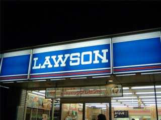
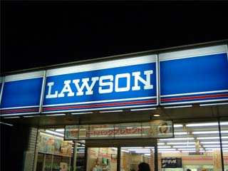


 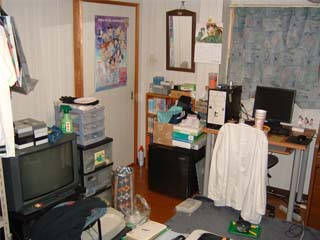
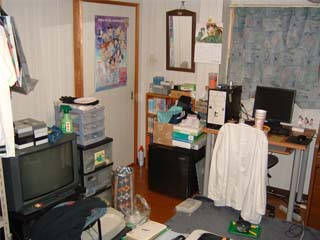 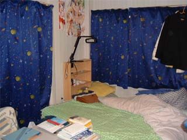
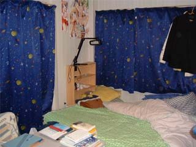